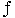

Dr. Dobb's Journal September, 2004
Some years ago, a faulty circuit breaker back-fed grid power into the generators after a shutdown, prompting their first complete disassembly since installation to replace the burned-out windings. More recently, a dam renovation increased the plant's annual output by raising the average water level a few feet and reducing the time required to clean the intake filters. Other than those interruptions, the generators have spun more-or-less continuously for eight decades.
A few weeks earlier, I attended the Real-Time and Embedded Computing Conference (http://www.rtecc.com/), which was held in the Sheraton Framingham. If you've ever driven I-90 west of 128/I-95, that's the ersatz castle just south of the MassPike. The exhibits were in a ballroom on the main level, with lectures and presentations in what would be the dungeons if the architects had truly gotten into the spirit of the thing.
The contrast between heavy-iron generators and heavy-duty embedded components was striking, with my money on the former for durability. Here's my take on some interesting aspects of the show.
Intel presented a talk on how to get from PCI and PCI-X to PCI-Express, the next-generation, in-the-box bus. A little background is in order to understand how we got into the current mess and why it's time for something completely different.
IBM introduced its Personal Computer in 1981 with a byte-wide backplane bus that matched the 4.77-MHz 8088 CPU. By 1984 the backplane widened to accommodate the 80286's two-byte interface (plus more address and control lines) and became known as the ISA bus, for Industry Standard Architecture Bus. The ISA bus begat late-80s evolutionary dead ends such as the VESA Local Bus (VLB), Enhanced ISA (EISA) Bus, and the Microchannel Architecture (MCA) bus. The now-ubiquitous Peripheral Component Interconnect (PCI) bus, introduced in 1992, had sufficient bandwidth to withstand nearly a decade of Moore's Law.
The PCI data rate tops out at 132 MB/second for the common 32-bit interface found in most PCs and 533 MB/second for the 64-bit version in servers and high-end workstations. While that sounds like a lot, the IEEE 1394 (aka Firewire) interface runs at 100 MB/second, USB 2.0 gizmos hit 60 MB/second, and Serial ATA disk drives can reach 188 MB/second. A single PCI bus cannot keep up with those peripheral data rates, even if you figure most gizmos average only a fraction of their theoretical (aka advertised) rates.
The PCI-X extensions to the PCI specification bump the peak data rate to just over 1 GB/second, but with a curious side effect: The "bus" becomes a point-to-point link. While the original PCI bus could accommodate up to four 32-bit or two 64-bit devices, with a tree of bridges linking several of those buses together to get enough I/O slots to be useful, this is a far cry from the ISA bus limit of half a dozen or so slots in parallel. Admittedly, anybody foolish enough to stuff an ISA box full of cards encountered power, cooling, and data-integrity problems, but the concept was workable.
The new PCI-Express specification transforms the byte-parallel PCI-X bus into a bit-serial, point-to-point link with a transfer rate of 2.5 GT/second ("T" for transfers) in each direction across two differential pairs of wires, with each transfer moving 1 bit. Surprisingly, the issue here is largely economic: The cost of designing, laying out, and building a circuit board depends strongly on both the maximum signal frequency and the number of conductors carrying that frequency. A very high transfer rate on a few conductors is far more affordable than a lower rate on many conductors.
A crude rule of thumb invokes radio-frequency design rules when a conductor's length exceeds 20 percent of the wavelength of the highest frequency in use. The wavelength of a signal in free space is simply the speed of light divided by the frequency:
=c/
The speed of light is 300×106 meters/second or 12×109 inches/second, so, in round numbers, a nanosecond is a light-foot.
Electromagnetic signals propagate about half as fast along circuit board traces than in free space, so their wavelength is twice as long. Digital signals (bits!) have abrupt transitions that require frequencies a factor of five or more higher than their nominal frequency. Taken together, those effects make the critical distance on the circuit board about 10 percent of the corresponding free-space wavelength.
PCI-X runs at 133 MHz, with a critical circuit-board dimension of about 23 cm or 9 inches. PCI-Express transmits 250 MB/second over a pair of wires carrying low-voltage differential signals, decreasing the critical length to about 2 inches. Although components are getting smaller, you can appreciate the challenge of placing many connectors no more than a few inches from their bus driver chip!
Those Dashville generators will still be spinning when PCI becomes as relevant as ISA, but ISA lives on in the embedded world: It's just packaged as PC-104. The embedded world moves faster than the power industry, but much slower than the PC world.
A readable overview of bus technology and PC-Express is at http://www.dell.com/downloads/global/vectors/2004_pciexpress .pdf. An Intel PCI-Express intro is at http://www.intel.com/technology/pciexpress/ devnet/docs/WhatisPCIExpress.pdf.
Montavista Software (http://www.mvista .com/) described some New Developments in Embedded Linux, including the observations that "Linux has grown up," the homebrew operating system is dead, and per-unit royalties are history.
In their view, a Linux system with 8 MB of RAM and 8 MB of Flash is doable, but more of both is highly desirable. Conversely, flensing out chunks of Linux to shrink its footprint is also doable, but to the extent that you eliminate vital pieces such as filesystems and communication stacks, you lose the advantages that drew you to Linux in the first place. The embedded distros may be lighter weight than their desktop compatriots, but they're not svelte.
Linux requires much more hardware than is found in the bulk of today's embedded systems, making it too bulky for the high-volume microcontroller market. Above that level, though, it's assimilating everything, as evidenced by the number of real-time OS vendors introducing either Linux-compatible interfaces, embedded Linux distros, or both.
In related news, the open-source Eclipse (née IBM Websphere) development platform is Borging the IDE world, printf-style debugging is obsolete, and the time-to-market for new systems is down to 12 months. The last fact seems to be driving the first two, as a system sufficiently complex to require Linux can pose a significant debugging challenge and it seems nobody wants to maintain Yet Another Proprietary IDE.
LynuxWorks (http://www.lynuxworks.com/) regards Linux as a soft-real-time OS at best, even with the scheduling and latency improvements in the 2.6 kernel (more at http://www.lynuxworks.com/products/whitepapers/linux-2.6.php3). They offer LynxOS, a genuine hard-real-time OS, as well as BlueCat Embedded Linux. The fact that LynxOS is "nonGPL encumbered" may be a deciding factor for some, although I'd hesitate to predict which way the GPL would drive the decision.
Both Linux-oriented sessions took place in a small room, with 40-50 standing-room-only attendees. Down the hall, Microsoft sessions on Windows XP Embedded and Windows CE .NET, in a much larger room, each attracted about 20 people. It seems that embedded-system designs, at least for systems with stringent performance requirements, do not require many Windows-specific features.
The process of creating software has always suffered in comparison with hardware methods, but that may well be changing. Unfortunately, hardware is becoming more like software, not the converse.
Spectrum Signal Processing (http://www.spectrumsignal.com/) gave a talk that was actually interesting despite its title. Ready? "Radio Waveforms and the SCA: Instantiating SDR Waveform Applications Across Heterogeneous Processing Elements (FPGAs, DSPs, and GPPs)." Got that?
First, let's untangle the acronyms. SDR= Software-Defined Radio, SCA=Software Communications Architecture, FPGA= Field-Programmable Gate Array, DSP=Digital Signal Processor, and GPP=General-Purpose Processor.
A classic radio translates between radio-frequency (RF) energy and audio or digital signals through a chain of analog circuitry. That hardware tends to be both bulky and finicky, requiring complex alignment and temperature compensation. When you look inside a wireless phone, you'll find most of the parts are stuck on the analog end of the board, with a few big epoxy slabs comprising the entire digital section.
Radios must use RF frequencies dictated by the physics of their application. Wireless phones operate at about 1 or 2 GHz because they operate within line-of-sight of the base station and must have small antennas. Shortwave stations (yes, shortwave lives!) operate around 10 MHz because those frequencies bounce off the ionosphere on their way around the Earth. Although various government rules and regulations also affect the frequencies available for use, those tend to follow the laws of physics.
Radios typically translate the external RF signal into an intermediate frequency (IF) that's chosen to simplify the rest of the circuitry. Complex radios may use three or more different IFs in succession. Each IF stage requires several analog components, ending with circuitry that converts the final IF into voice or data. The same process applies in reverse to transmit a signal: Voice or data passes through a modulator, one or more IF stages, then a power amplifier drives the signal through the antenna.
A software-defined radio has a single IF stage followed by a digital-to-analog converter (or two, depending on the application), replacing all the fiddly analog components with digital signal processing algorithms. Changing the type of signal, even from voice to data, requires nothing more than changing the algorithm.
Those algorithms may execute as software in a GPP or a dedicated DSP but, for the highest performance radios, they'll be implemented directly in gate-array hardware. The problem that SCA solves is allocating the hardware, loading the algorithm configuration into the gate arrays, and generally lashing all the machinery together. To my eyes, it looks a lot like an operating system. There's even a CORBA server buried inside.
However, if you thought debugging software was bad, just imagine tracking down problems in hardware that's defined by software, with all the key signals existing as evanescent bit streams. It can be done, but the value of getting things right the first time is increasing dramatically.
Analog circuitry hasn't vanished completely and, in fact, it's more vital than ever before. Diamond Systems (http://www .diamondsystems.com/) presented Data Integrity in Embedded Analog Measurements, pointing out obscure problems that can completely invalidate your measurements without any obvious indication of trouble.
In principle, an analog-to-digital converter samples its input voltage and presents a digital equivalent to the DSP code. If all voltage sources were ideal, all cables were schematic-perfect lines, and all switches behaved properly, what goes in would come out unchanged. Many errors are second-order, at best, making them easy to miss when you're designing (and debugging!) a system.
Most sensors produce voltages through a reasonably low output resistance. When the ADC has a reasonably high input resistance, most of the voltage appears at the ADC and the system works as you'd expect. Some sensors have a high output resistance that absorbs some voltage from the ADC and produces low digital readings, but when you disconnect the ADC to check what's going wrong, your very-high-impedance voltmeter says everything looks fine.
You can fix that with a software gain adjustment after you find it. Assuming you do find it, that is.
The cable between the source and ADC can cause a more subtle error. The capacitance between the signal and common conductors forms a low-pass filter in combination with the source and input resistances. Because a low-pass filter attenuates only high-frequency signals, you won't notice anything wrong with slowly changing inputs. When you apply higher frequency signals to the same circuitry, some things don't reach the far end—sharp edges and narrow spikes.
Maybe that's what you intended, but if you expected an accurate digital copy of the input, you're in for some protracted debugging. Nobody suspects the cables, at least for the first few days. Do you?
Many data acquisition systems route multiple analog inputs to a single ADC through analog switches. You must select the proper input, then trigger an ADC cycle in order to read a voltage, a process that works for low sampling rates.
The ADC's input bandwidth limits the maximum switching rate if it cannot recover from one sample voltage before the next is applied. Surprisingly, many ADC chip datasheets don't specify the input bandwidth, perhaps because they assume one ADC samples one analog signal with no switching.
The effect appears as crosstalk between separate channels, but the interfering signal is a low-pass-filtered version of the original. It might take quite a while to figure out where that rumble originates.
Even in this digital age, analog skills remain marketable. If you're having trouble with your data collection system, you need somebody who knows which end of a scope probe to use.
The between-sessions and over-lunch chatter revealed another issue: the visceral dislike (perhaps that's putting it too mildly) of Microsoft and its offerings in any and all contexts. I heard, from several directions, that technical folks have been instructed to find a way to simply not use Microsoft products, regardless of the cost or inconvenience. That would explain the attendance figures I observed, as well as a factoid from last year's ESC/SD shows: Dot-Net books weren't leaping off the shelves in expected numbers.
I admit to a completely unscientific survey methodology and no hard facts. However, what I don't hear is that Microsoft is winning the hearts and minds of the technical staff or management.
Thanks go to our Dashville plant tour guides, Fred Laurito and Larry Sauter, for a fascinating look into century-old hardware that's still getting the job done. The plant's computerized monitoring system, on the other hand, has become irreparably obsolete after about a decade.
The picture comes from my Zire 71 PDA, which incorporates the worst camera you wouldn't throw across the room in disgust. It's valuable for those times when "I wish I had a camera," but it's useless for critical images.
DDJ